mangrove_large
assets/raw_sheets/tropical_delta_village_asset_atlas.png · crop [0, 0, 270, 235] · foot {'x': 0.5, 'y': 0.88}Curated MVP assets at comparable display scale. Static characters remain placeholders and are explicitly flagged.
assets/raw_sheets/tropical_delta_village_asset_atlas.png · crop [0, 0, 270, 235] · foot {'x': 0.5, 'y': 0.88}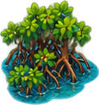
assets/raw_sheets/tropical_delta_village_asset_atlas.png · crop [665, 45, 805, 215] · foot {'x': 0.5, 'y': 0.88}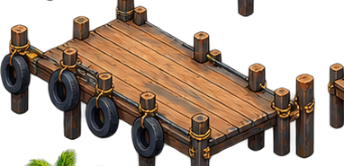
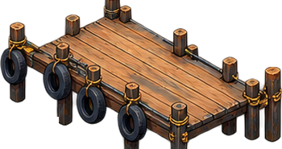
assets/raw_sheets/tropical_delta_village_asset_atlas.png · crop [15, 640, 385, 825] · foot {'x': 0.5, 'y': 0.78}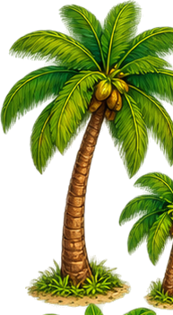
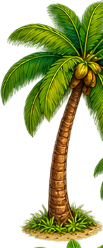
assets/raw_sheets/tropical_coastal_game_asset_atlas.png · crop [0, 0, 158, 360] · foot {'x': 0.48, 'y': 0.94}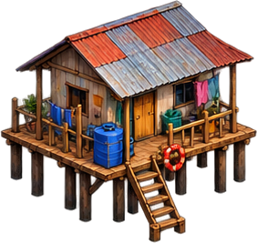
assets/raw_sheets/isometric_nigerian_village_asset_pack.png · crop [15, 15, 325, 345] · foot {'x': 0.5, 'y': 0.88}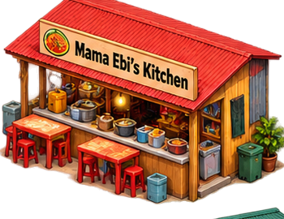
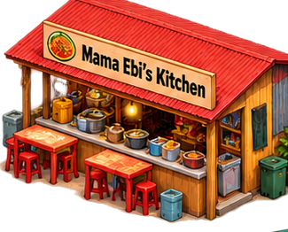
assets/raw_sheets/isometric_nigerian_village_asset_pack.png · crop [390, 350, 715, 612] · foot {'x': 0.5, 'y': 0.92}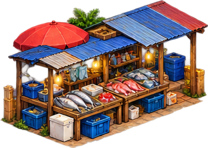
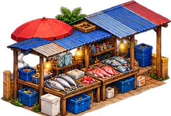
assets/raw_sheets/isometric_nigerian_village_asset_pack.png · crop [5, 350, 372, 605] · foot {'x': 0.5, 'y': 0.92}assets/raw_sheets/isometric_nigerian_village_asset_pack.png · crop [410, 640, 888, 892] · foot {'x': 0.5, 'y': 0.92}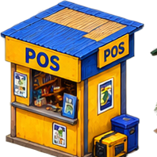
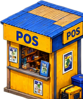
assets/raw_sheets/isometric_nigerian_village_asset_pack.png · crop [750, 370, 920, 585] · foot {'x': 0.5, 'y': 0.94}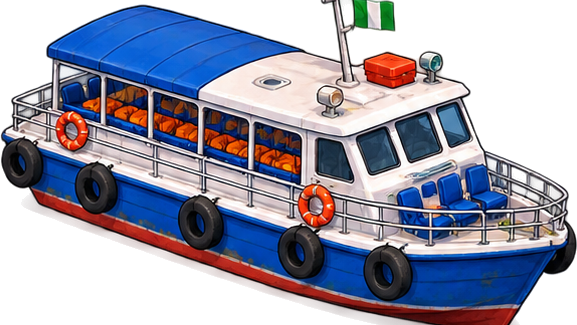
assets/raw_sheets/nigerian_coastal_transport_asset_sheet.png · crop [15, 330, 610, 655] · foot {'x': 0.5, 'y': 0.8}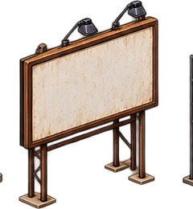
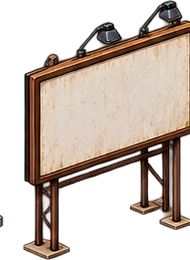
assets/raw_sheets/isometric_niger_delta_infrastructure_asset_sheet.png · crop [690, 570, 900, 845] · foot {'x': 0.5, 'y': 0.94}assets/raw_sheets/nigerian_community_character_sprite_sheet.png · crop [0, 105, 185, 630] · foot {'x': 0.5, 'y': 0.96}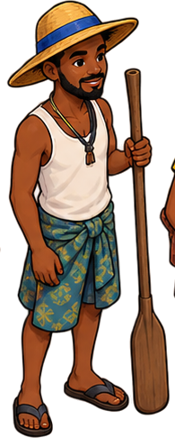
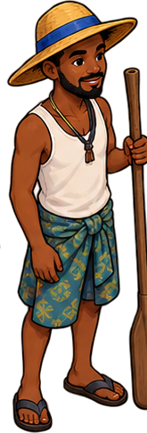
assets/raw_sheets/nigerian_community_character_sprite_sheet.png · crop [360, 105, 525, 630] · foot {'x': 0.5, 'y': 0.96}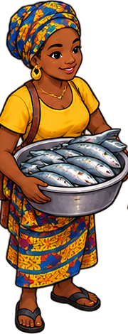
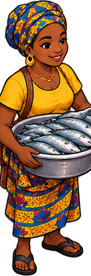
assets/raw_sheets/nigerian_community_character_sprite_sheet.png · crop [555, 100, 710, 630] · foot {'x': 0.5, 'y': 0.96}assets/raw_sheets/nigerian_community_character_sprite_sheet.png · crop [735, 690, 900, 1240] · foot {'x': 0.5, 'y': 0.96}